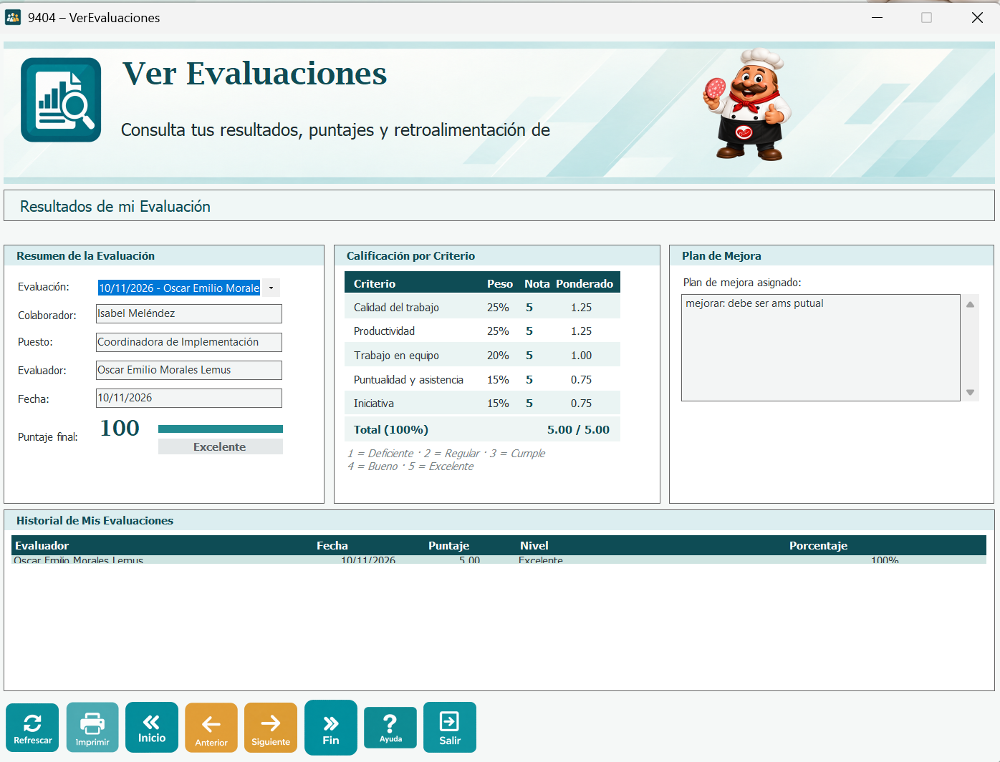
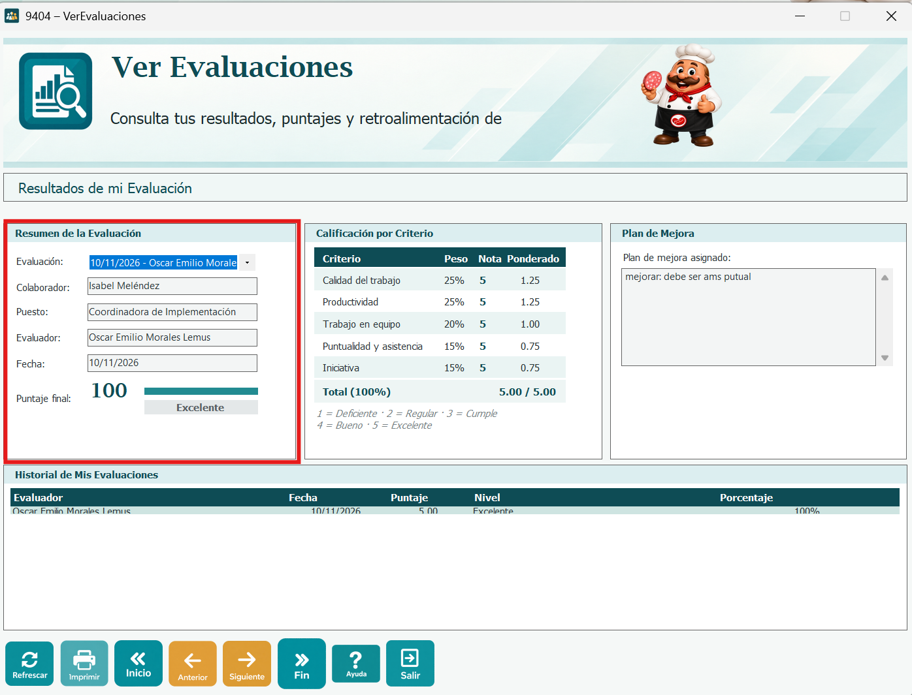
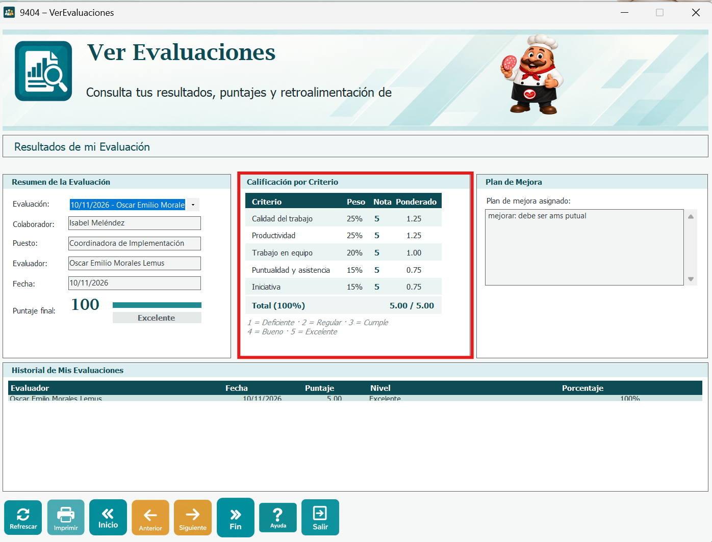
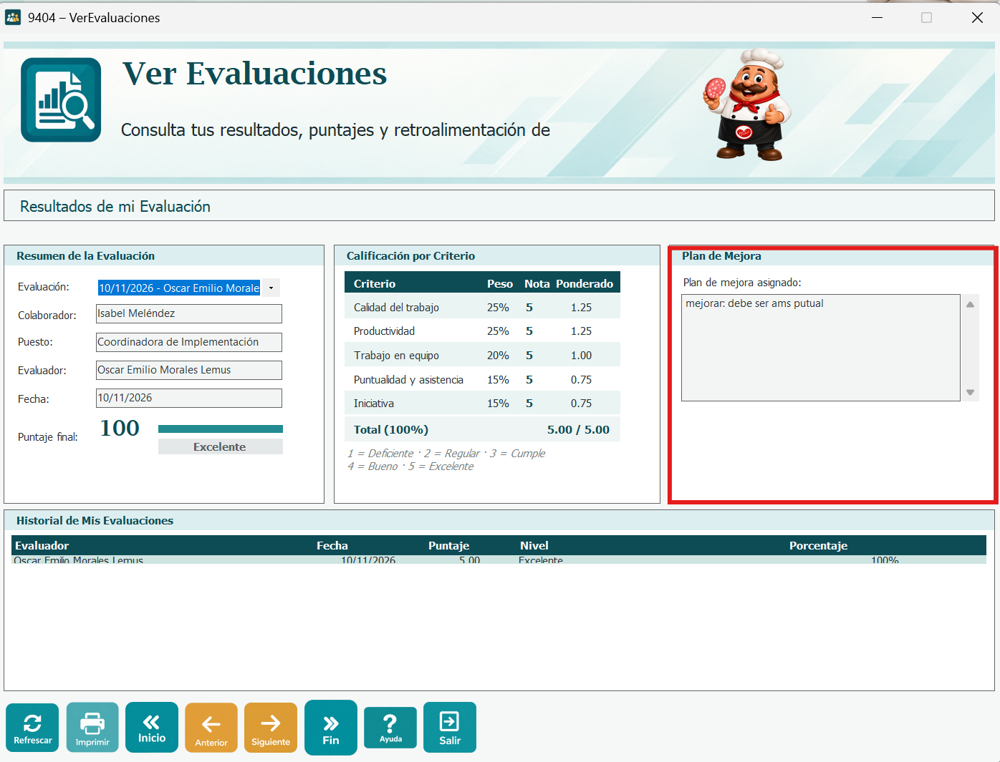
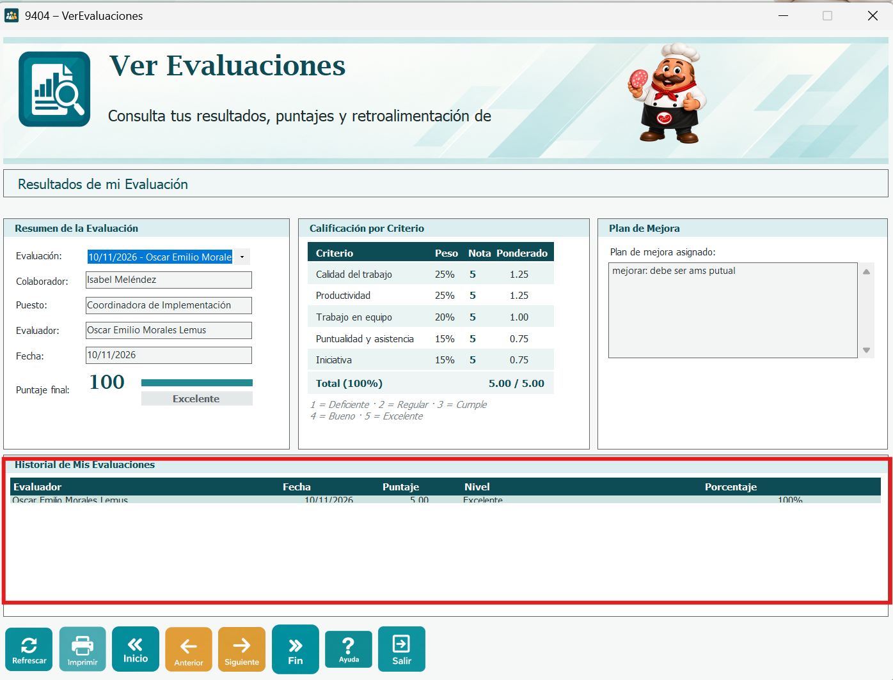
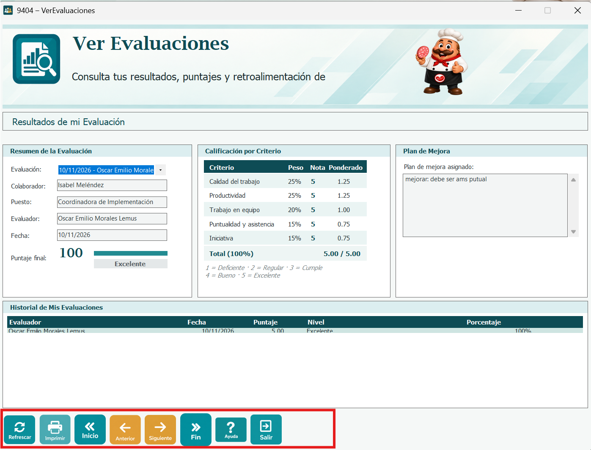

La ventana 9404 - Ver Evaluaciones permite al usuario que inició sesión consultar los resultados de sus propias evaluaciones de desempeño. Es una ventana de solo consulta: no se puede ingresar, modificar ni eliminar información.
Al abrirse, la ventana carga las evaluaciones del empleado asociado al usuario y muestra la más reciente. Si el usuario todavía no tiene evaluaciones, se muestra el mensaje "Todavía no tienes evaluaciones de desempeño para consultar."

En el combo Evaluación se elige la evaluación que se desea ver; cada opción muestra la fecha y el nombre del evaluador. Al elegirla se muestran el colaborador, su puesto, el evaluador y la fecha de la evaluación.
El Puntaje final se muestra en porcentaje, con una barra de avance, y debajo el nivel de desempeño: Excelente con 80% o más, Satisfactorio con 50% o más e Insuficiente con menos de 50%.

Esta tabla muestra cada aspecto evaluado con su peso, la nota obtenida y el ponderado (peso por nota): Calidad del trabajo (25%), Productividad (25%), Trabajo en equipo (20%), Puntualidad y asistencia (15%) e Iniciativa (15%). Al final se muestra el total sobre 5.00.
Las notas van de 1 a 5: 1 = Deficiente, 2 = Regular, 3 = Cumple, 4 = Bueno y 5 = Excelente.

Muestra el nombre y la descripción del plan de mejora asignado a la evaluación. Si la evaluación no tiene plan, se muestra "Sin plan de mejora asignado".

La tabla muestra todas las evaluaciones del usuario, de la más reciente a la más antigua, con el evaluador, la fecha, el puntaje, el nivel y el porcentaje. Al hacer clic en una fila se muestra esa evaluación en el resumen y en la calificación por criterio.

Refrescar: vuelve a cargar las evaluaciones desde la base de datos.
Imprimir: abre la vista previa de impresión con la imagen de la ventana, en hoja horizontal.
Inicio, Anterior, Siguiente y Fin: se desplazan entre las evaluaciones del historial (la primera, la anterior, la siguiente y la última).
Ayuda: abre la página de ayuda de Evaluación de Desempeño.
Salir: cierra la ventana.
